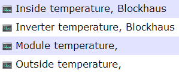
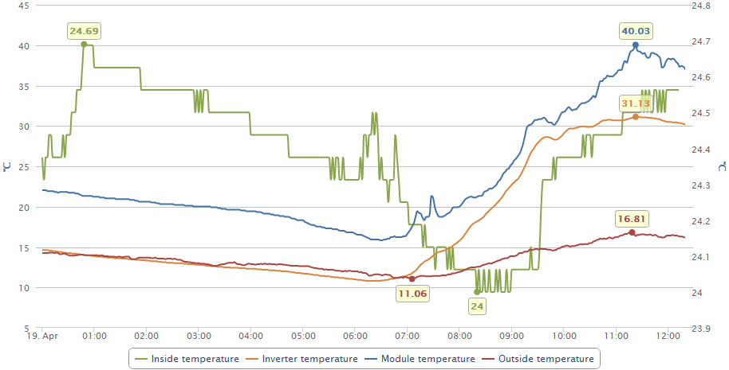
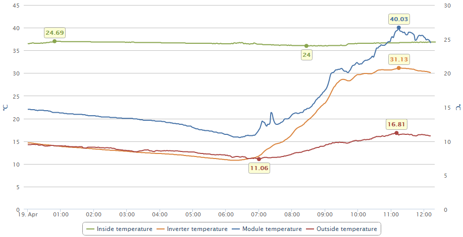

Recommendations
Assign channels with different units to different axes
If the value ranges is mostly the same, collect channels with same unit on the same axis
Sometimes you have channels with same unit, but different value ranges. Then it can make sense, to have different axes with same unit.
Example
Here we have 4 temperatures:

But of the inside temperature, the other correlate more or less to "outside" located.
So we put the last 3 on the left and the inside temp to the right axis.

But there is an option to align the axis if required...
Just check and you will get this:

Created with the Personal Edition of HelpNDoc: Write eBooks for the Kindle